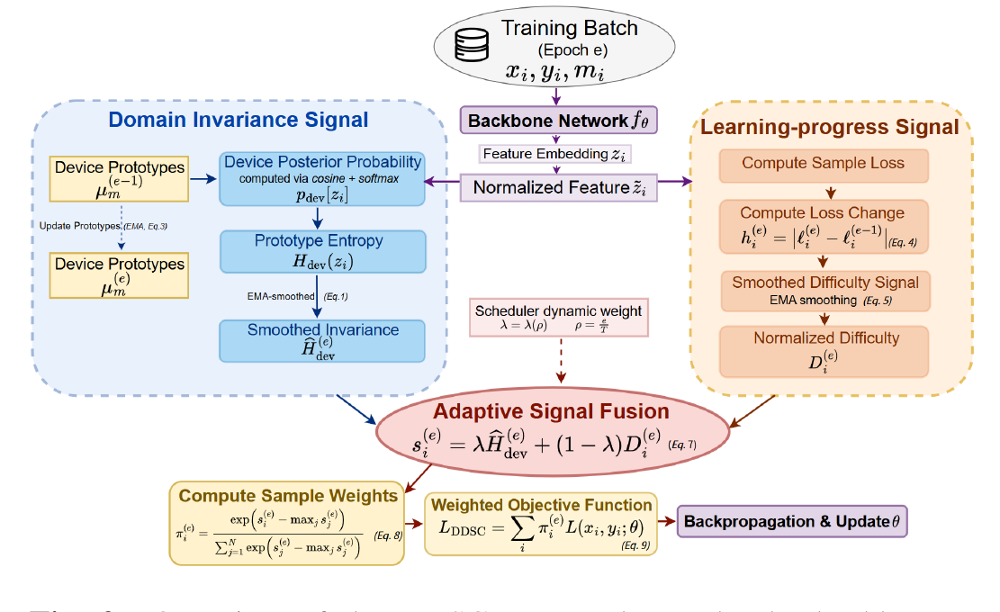

Recorders leave a fingerprint.
Scenes are observed through real and simulated devices, including device types absent from training.
DDSC replaces a static easy-to-hard curriculum with two signals whose influence changes over training: device invariance first, learning potential later.
Animated reading: two sample-level signals flow into a cosine-controlled fusion; the focal weight shifts from invariance toward learning progress.
Under device shift, an example that helps learn transferable structure early may not be the example with the greatest learning value later.
Scenes are observed through real and simulated devices, including device types absent from training.
The study tests five label budgets from 5% to 100%, where poor ordering is most costly at the low end.
A fixed ranking cannot reflect the model’s changing state or distinguish transferability from current learning progress.
Online device prototypes produce posterior distributions. Higher entropy indicates weaker device specificity.
An exponential moving average of absolute per-sample loss change estimates learning potential without a second model.
A cosine schedule favors invariant examples earlier and progressively admits higher-potential, device-specific cases.
At the 5% label budget, all four evaluated systems improve; results are reported over five independent experiments for DDSC variants.
Overall accuracy with DDSC at 5% labels; unseen-device accuracy is 46.10%.
Overall accuracy with DDSC at 5% labels; unseen-device accuracy is 52.75%.
Overall accuracy with DDSC at 5% labels; unseen-device accuracy is 56.42%.
Values reported in Table 2 of the paper. “pp” denotes percentage points.
The published overview makes the research contribution legible in one view: online prototype entropy measures device invariance, smoothed loss change tracks learning progress, and a scheduler fuses them into per-example weights.
